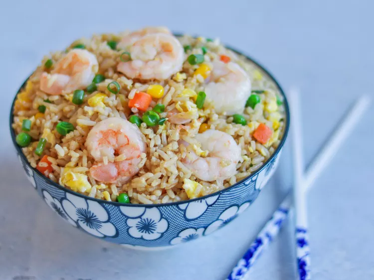

Fried Rice

Description
Packed with soft shrimp, fluffy rice, and a colorful assortment of vegetables, this shrimp fried rice is a quick and tasty meal. Sesame oil and soy sauce are used lightly to season it, giving it a savory flavor with a touch of nuttiness. Perfect as a standalone meal or a side dish, this recipe is ideal for weeknight dinners and brings the delicious flavors of a restaurant-style fried rice to your kitchen.
Ingredients
- 1 cup cooked jasmine rice (preferably chilled)
- 1/2 lb shrimp, peeled and deveined
- 2 tbsp vegetable oil
- 1/2 cup diced carrots
- 1/2 cup peas
- 2 green onions, chopped
- 2 cloves garlic, minced
- 2 tbsp soy sauce
- 1 tsp sesame oil
- Salt and pepper to taste
Steps
- Heat 1 tablespoon of vegetable oil in a large skillet over medium-high heat. Add the shrimp, season with salt and pepper, and cook until pink and opaque, about 2-3 minutes per side. Remove shrimp from the skillet and set aside.
- Add the remaining oil to the skillet, followed by the garlic, carrots, and peas. Sauté for 2-3 minutes until the vegetables are tender.
- Add the rice to the skillet, breaking up any clumps, and stir-fry with the vegetables for about 2 minutes.
- Return the shrimp to the skillet, then add the soy sauce, sesame oil, and green onions. Toss everything together and cook for another 2-3 minutes, until well-mixed and heated through.
- Serve hot, and enjoy your homemade shrimp fried rice!